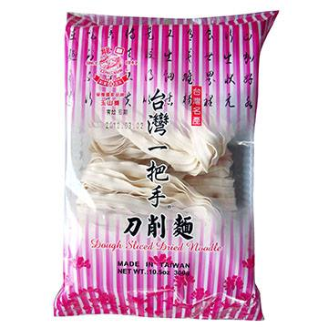
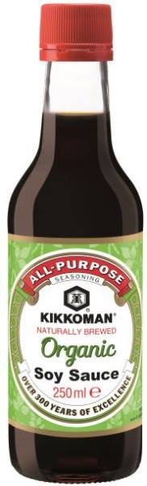
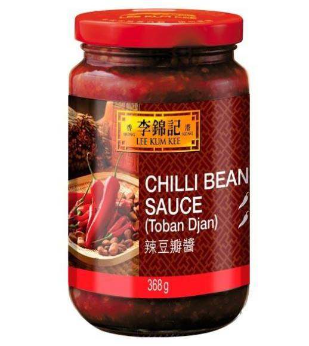
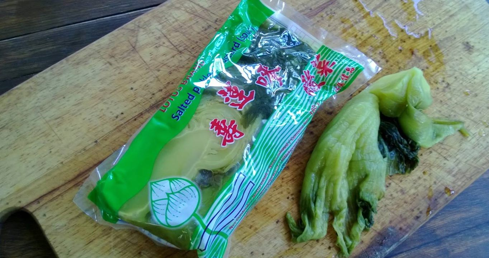
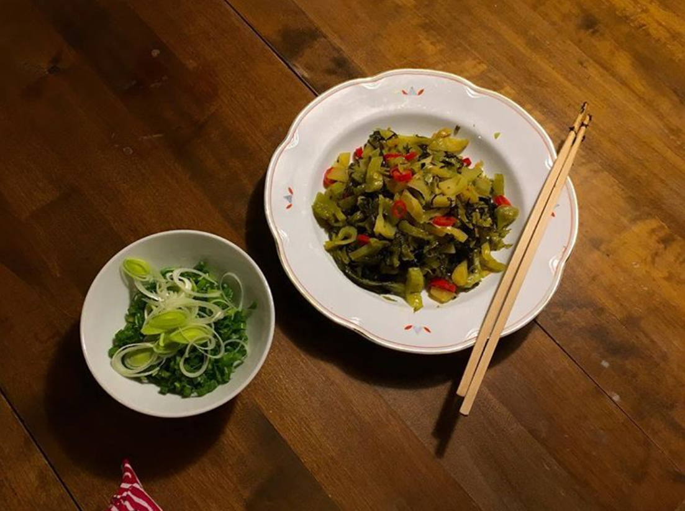

How to make Taiwanese beef noodle soup in Helsinki
目錄
牛肉麵本身就是台灣一道移民色彩濃厚的食物，在台灣歷經相當的本土化過程。雖然似乎沒有很具體可信的史料，但比較常看到的說法是來自四川的豆瓣醬、碰上本地的番茄、蔗糖，當然還有進口的牛肉。酸菜的部分，重甜的口感，不知道是不是受到日本影響，至少作為蔗糖產地的特色是很明顯的。
當時出國前在想，如果要選一道菜帶到國外，牛肉麵似乎是不錯的選擇，而且材料應該都不會太難找，也不用像豬肉一樣，擔心被不放血的腥味影響，但來了芬蘭之後，才發現本土化不是我想得那麼簡單。比如芬蘭酒是公賣，自然我買不到米酒，蔥的味道也跟台灣不同，牛腱的切法，更是台灣方向（縱切）的90度反轉。在芬蘭做的牛肉麵，在台灣如果照做一次，味道應該還是很不一樣。想想竟然也有點當年四川老兵移民來台灣（如果傳聞屬實）的心情了。
Making beef noodle soup can be a hassle if you are not familiar with the materials available in Helsinki. After several times of try-and-error, I developed my way of beef noodle soup in Helsinki. As some of the fresh ingredients have their own unique flavors in the north, I think it’s impossible to make it with this “Helsinki taste” in Taiwan.
ingredients
- Tomato 1 pcs
- Green Onion 100g (leek is also OK.)
- Onion 1 pcs (small one is enough)
- Beef Prank 1/2 pcs or 150g -> (it’s available at the Stockmann citycenter. You can also buy the other parts of beef which are suitable for stewed. But Occo buco is the best!)
- Dough Sliced Noodle 1 pcs available at JIAHE Asia Market at Hakaniemi. It's also OK to use spaghetti.
- Ginger 3 slices
- Garlic 1/3 ball
- Chili and pepper are up to your own taste. For me, 2 - 3 slices of chili are enough.
- Spice Pouch -> available at JIAHE Asia Market at Hakaniemi.
- Soy Sauce I always buy the green organic one by Kikkoman Japan. available at the Asian market in Hakaniemi, and also some K-citymarket.
- Sweet Bean Sauce available at DFH Asian Market at Hakaniemi. I would recommend the product by Lee Kum Kee, a Hongkongese brand
- Rice Wine (available at Alko, just ask them for Japanese rice wine. it’s cheap, only around 5 euro per bottle. It’s not necessary)
Instructions
- Cut the beef into pieces of around 2 bites; slice the garlic and onion; cut the tomato into big pieces; chop the green onion.
- Heat up a pot of water in advance.
- Heat up oil in a deep pot over medium heat. Stir in onion, chili, and ginger. Cook until the onions become soft.
- Stir in garlic, sugar (one tea spoon), and beef. Cook for 3 mins.
- Then, add the soy sauce, sweet bean sauce, and pepper (if using). Stir all of them for one minute.
- Pour in the pot of water that you have prepared. Drop spice pouch and tomato in. Also the rice wine (if using).
- Cover and leave to simmer for 1 hour.
The last step is to add noodle and some vegetables you like (it can be mushroom, broccoli, green onion, spinach, etc). Then, it’s done!
牛肉切兩口吞的大小，蒜頭剁碎、洋蔥切絲、番茄八片分屍，蔥切片。旁邊起一鍋水同時煮滾。
- 熱油，洋蔥、薑、辣椒丟下去炒軟（這時加鹽會軟比較快），大概五分鐘。
- 同時加蒜頭、糖、牛肉丟下去，炒個三分鐘，讓蒜頭有點爆香到，牛肉表面有點被煎熟之後才不會萎縮。如果有喜歡胡椒還是什麼其他香料，這時候可以一起丟。
- 加醬油、豆瓣醬，炒到醬香跑出來。
- 把剛剛旁邊那鍋水倒進去。丟滷包跟番茄。
- 轉小火蓋鍋蓋放著滾一小時（更久到兩小時也行），中間可以做自已的事。要起來的時候看自己喜歡的蔬菜丟一丟，也丟麵下去。結束。
- 如果想省時間，用超市買的炒菜用的牛肉條，滾個五到十分鐘就可以吃了，就肉質不佳而已。
- 這是一道隨性的菜，喜歡蕃茄的話，就多加點番茄，反正這邊的番茄沒什麼味道。
Notes
- 如果怕腥味，可以先給牛肉跑活水
- 下面有個更道地的甜酸菜做法
Bonus: Sweet Pickled Mustard
- Salted Pickled Mustard 酸菜，亞超賣的好像是蓮花牌
Show the picture to a staff at any Asian market at Hakaniemi, they will let you know where it is. Image source: http://mirkankysymyksia.blogspot.fi/2013/08/sareptansinappi-on-super-kiukkukaali.html
Wash out the liquid in the package of mustard (it’s too salty). Slice the mustard. Heat up oil in a pan over medium heat. Stir in the sliced mustard, garlic, sugar (the amount depends on how much mustard you add. The ideal outcome is to reach a balance between sour and sweet – you can decide where the balance is!) and chili. Cook for around 5 mins and keep stirring them.
It’s just so nice and very classic Taiwanese to add them on the top of the noodle soup! If you can’t eat all of them at that time, it’s ok to store them at the fridge for several days. No need to heat it up before eating.
在等湯的時候如果閒著沒事幹，可以另外起一鍋爆香蒜頭辣椒，酸菜洗淨（中國的品牌太鹹了，一定要洗）切絲炒一炒，別忘了加糖。搞定。
加在麵上棒棒，思鄉情懷爆棚，吃不完水份濾乾淨，丟冰箱放幾天沒問題。

(完)